- 8 nights
- No car needed
- Solo, then two from 9 May
- About £660–690 known so far
Ad: some booking links on this page are, or will be, affiliate links. If you book through them I may earn a small commission, at no extra cost to you. I only link to places and trips I actually used and paid for myself, and I say plainly when something wasn't worth it.
Part of my 11 weeks on Australia's east coast and Tasmania. This page covers the Whitsundays only. Each region works as a block on its own, so you can do just this one or link it to others.
Days to allow
I had 8 nights: 4 to 12 May. I flew into Proserpine on the afternoon of 4 May and left early on 12 May by bus and train to Townsville.
That turned out to be tight. When the weather turned, I had no spare days, so when my reef day was cancelled I had to take whatever boat was going the same day. Rich to update: how many days you'd tell someone to allow.
The route at a glance
Brisbane → Proserpine (flight) → Airlie Beach → 2 nights on a liveaboard catamaran (Hook Island, Whitehaven and Hill Inlet) → back to Airlie Beach → day trips by boat and jetski from Airlie → out by bus and train to Townsville.
I didn't hire a car. Airlie Beach is walkable, the boats leave from the marina, and I used the airport shuttle from Proserpine on arrival.
I was on my own until 9 May, when my travel companion joined me. From then on we shared the apartment.
What it really cost
Figures are in GBP, per person, unless I say otherwise. "Paid" means a real booking cost; "estimate" means it comes from my plan.
| Per person | |
|---|---|
| Flight in (Brisbane → Proserpine, Virgin Australia) | A$163.60 paid (about £86), solo |
| Airport shuttle to Airlie | about £10–13, estimate |
| Magnums, Airlie Beach (1 night, 4 May) | about £56 paid, solo |
| Power Play liveaboard (2 days, 2 nights, 5–7 May, meals included) | about £333–366 paid, solo |
| Marina View Apartment (5 nights, 7–12 May) | Rich to update. My plan had about £104 a night for the room, shared by two |
| Reef day, 10 May (Viper, then Ocean Explorer) | Rich to update. Viper was about £176 pp paid (half of A$672.80, shared by two), but it was cancelled |
| Jetski tour, 11 May | A$329 paid (about £172). Rich to update: per person or for both of us? |
| Food and drink | Rich to update |
| Known so far | about £660–690, plus the apartment, the reef day and food |
Conversions are approximate, at the rate my plan used for the jetski (about 1.9 AUD to the pound).
For comparison, my plan's daily estimates (stays, tours and food together) added up to about £1,305–1,820 per person for 4–11 May.
Without family or free stays: there were no family or free stays in the Whitsundays. I paid for every night, so your costs should be close to mine. I was solo for the first five nights. If you're travelling as a couple, the room and anything priced per boat or per jetski splits between you, which brings the per-person cost down. Tours priced per person (like the liveaboard) don't.
Rich to update: was the Viper tour refunded after it was cancelled, and what did Ocean Explorer cost?
Day by day
Day 1 · 4 MayFly Brisbane → Proserpine
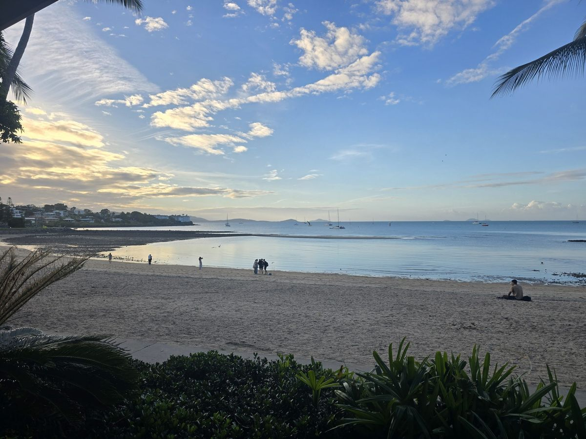
A lovely breakfast in Brisbane (awful coffee), then the train to the airport. My bags were over the weight limit on all three counts: 3 kg over on the checked bag, 4 kg over on the carry-on and 3 kg over on the laptop bag. I talked my way past the check-in desk, got stopped at the gate, and somehow came out of it with a free upgrade to an exit-row seat. Into Airlie, sorted the airport transfer, dropped the bags and went for a Guinness.
The cheap hotel (Magnums) was what I expected: a room the size of a prison cell, right next to a nightclub. KC's was recommended to me by several people for dinner.
Tip: check your bags against the airline's weight limits before you go. I got lucky.
Day 2 · 5 MayAirlie Beach, then onto the boat
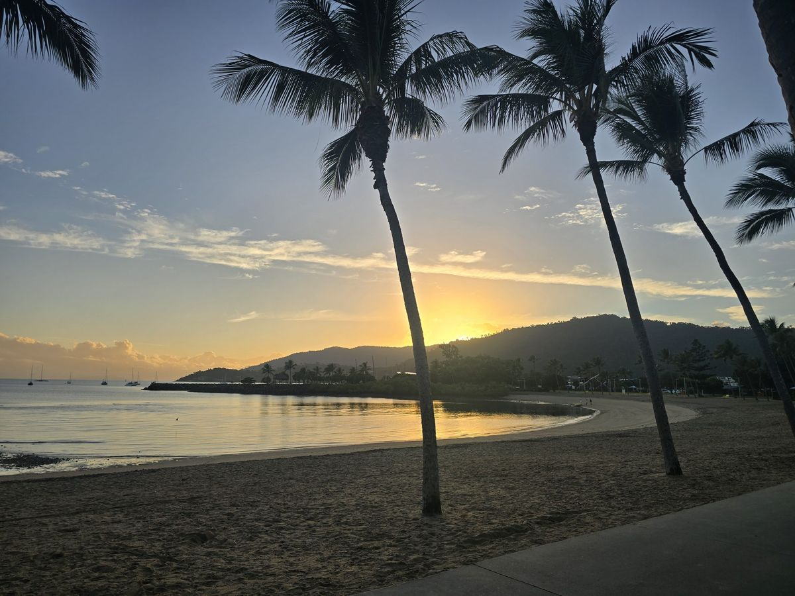
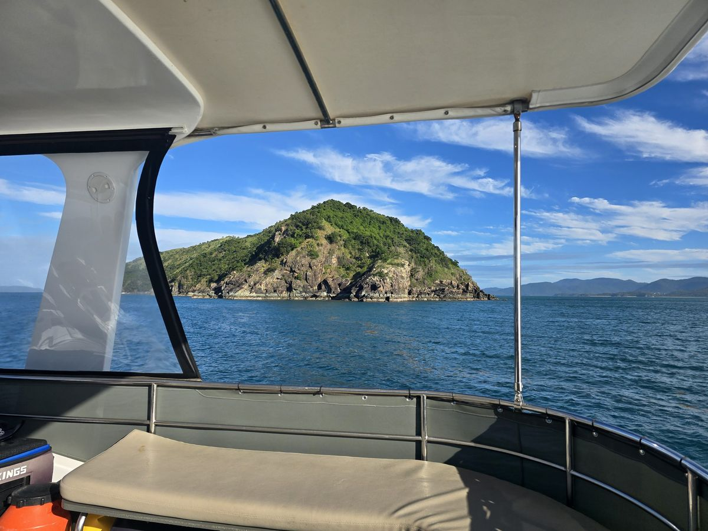
Up at 5am for a walk along the beach to watch the sunrise. Checked out, went for a long walk, had a great fried breakfast, then sat round the lagoon for a couple of hours. Sushi, grabbed the bags and down to the marina to meet the catamaran (Power Play). By evening we were moored off Hook Island.
Day 3 · 6 MayHill Inlet on a grey day
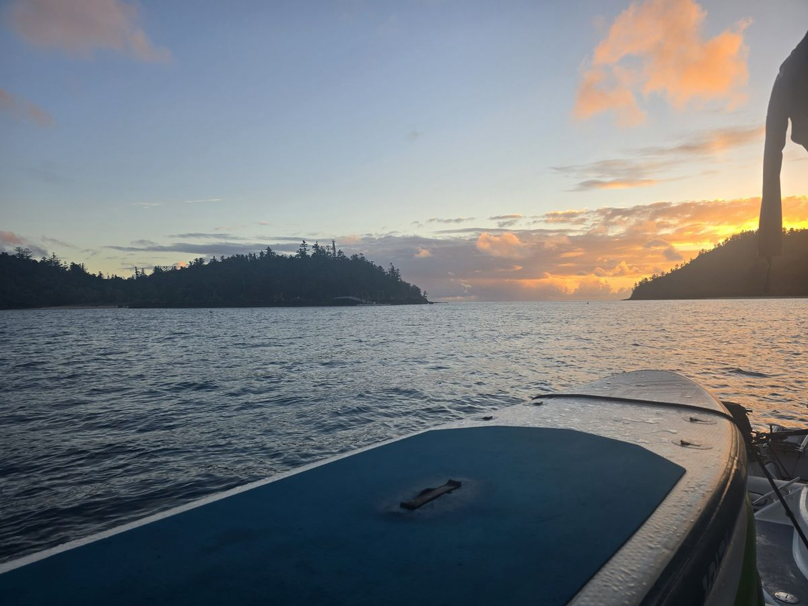
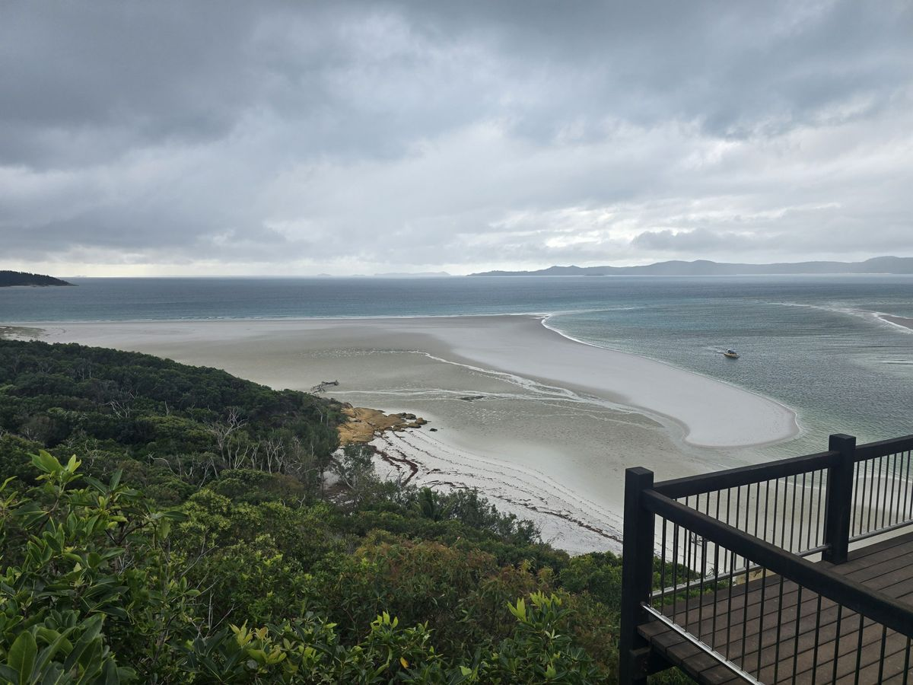
Woke up moored between Hook Island and Whitsunday Island and watched the sunrise. Then an hour's motor to the inlet and the walk up to the Hill Inlet lookout. It was grey and overcast, then it rained. The colours were disappointing, but it is what it is.
Rich to update: the rest of this day on the liveaboard (snorkelling, Whitehaven Beach, the jacuzzi?).
Day 4 · 7 MayPaddleboarding, back to Airlie
Paddleboarding off the boat, then back to Airlie (the plan had us in around noon). That night I moved into the Marina View Apartment.
Rich to update: what this day was like, and your verdict on the liveaboard.
Day 5 · 8 MayAdmin day
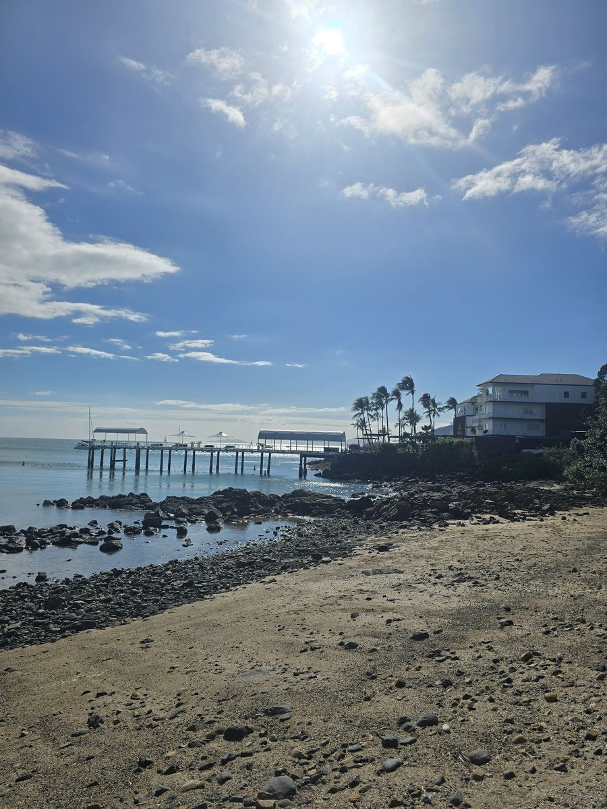
A day of sorting things out: cancelling and rebooking tours.
Rich to update: which tours were cancelled or rebooked, and why.
Day 6 · 9 MayPickleball, and my travel companion arrives
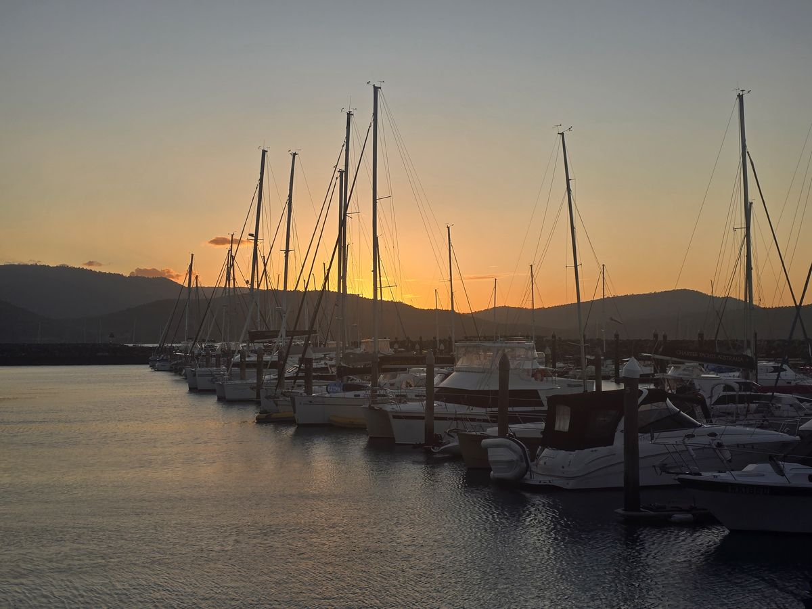
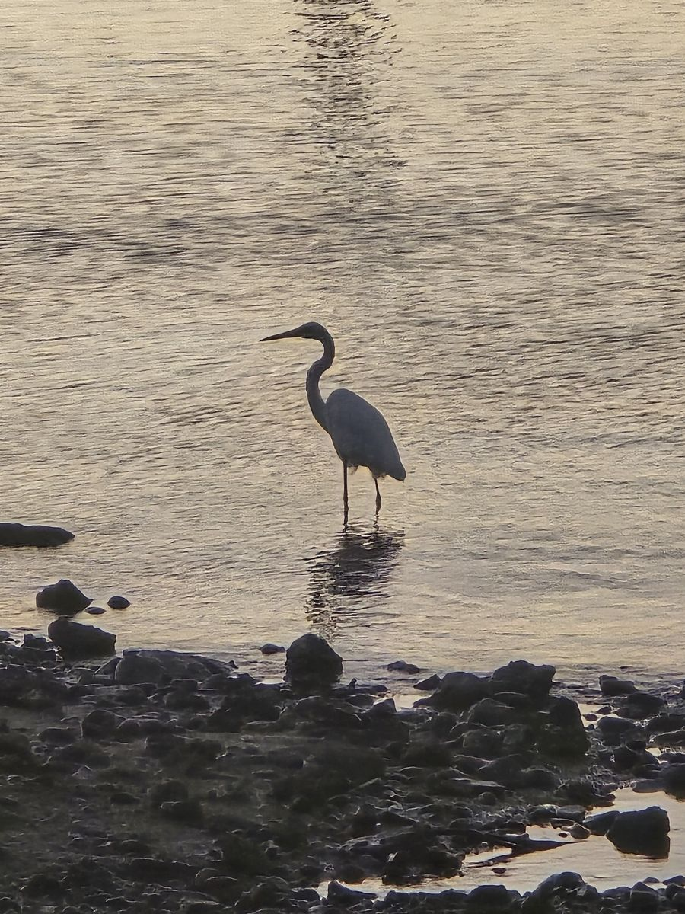
Up very early for the sunrise, then pickleball at 7am. A great crowd and good fun. A couple of hours of washing and admin at the apartment, then the bus to the airport to meet my travel companion. Bus back, a wander through town and a lovely sunset. We tried for pizza but the wait was too long, so we went for an Indian, which was just OK.
The plan had an afternoon ferry to Hamilton Island today. Rich to update: did Hamilton Island happen, or was it dropped?
Day 7 · 10 MayViper cancelled, fast boat to Whitehaven instead
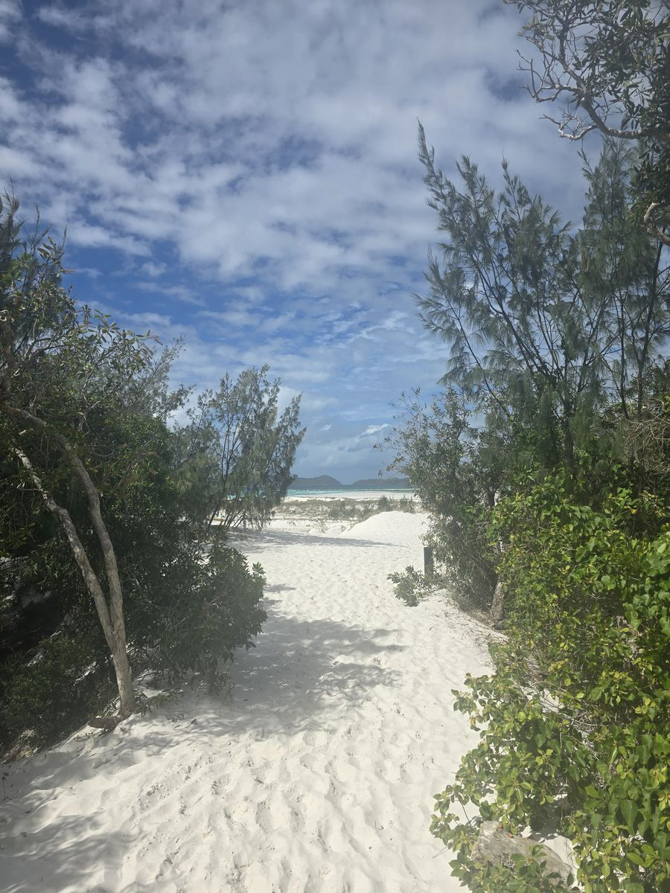
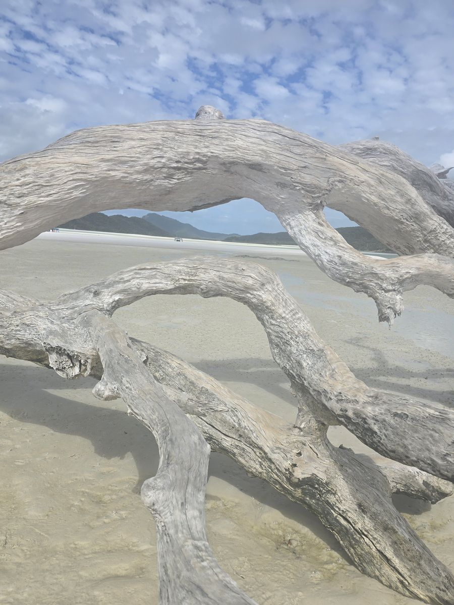
Viper cancelled because of the weather. I didn't tell my travel companion while she was travelling, so she wouldn't worry, and booked Ocean Explorer instead: one of the fast yellow RIBs (rigid inflatable boats). We'd been warned the weather was bad, but with no spare days we had no choice.
It turned out to be a right laugh. After sweet-talking the guide, I went ahead of the group and got some amazing shots of Whitehaven Beach with nobody on it. We did two snorkel stops, and my travel companion saw George, the big fish, and other large fish at one of them. On the way back she rode on the outside of the RIB on the good side; the two on the other side got absolutely soaked. We dodged the rain, jumped the waves in the twin-engine RIB and had a great time.
Day 8 · 11 MayJetski tour
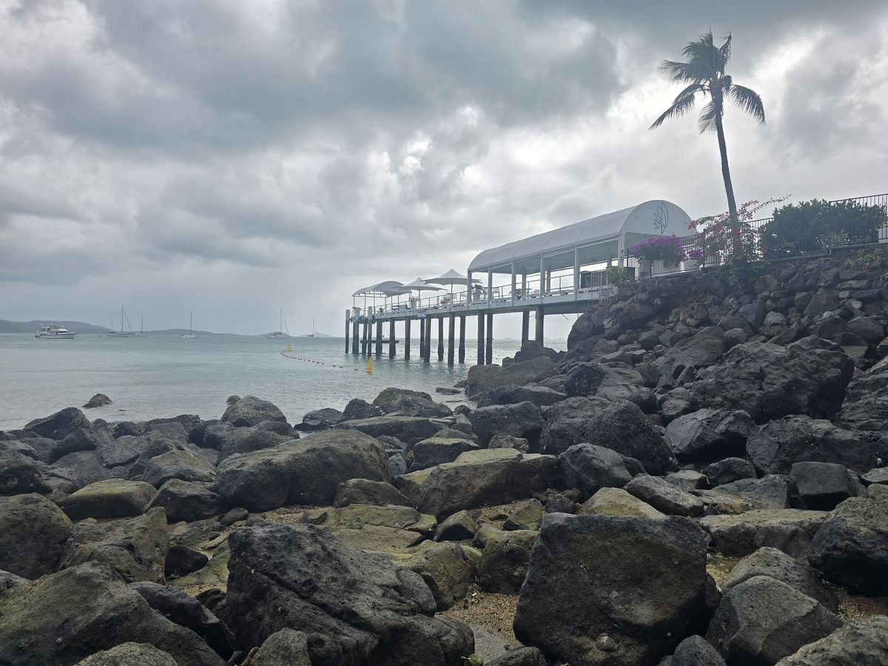
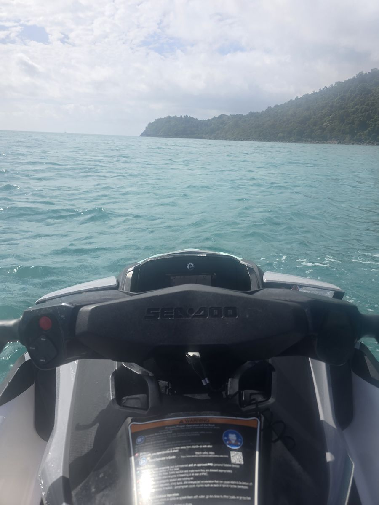
The Two Island Safari jetski tour (2 hours, round Daydream and South Molle Islands, at 12pm in the plan).
Rich to update: how the jetski tour went, and your verdict.
Travel out · 12 MayTo Townsville
The plan was the RailBus at about 5:45am to Proserpine, then the Spirit of Queensland train at 7:16am to Townsville. Industrial action delayed the trains and we left about 3 hours late. The rest of that day is on the Magnetic Island page.
Weather plan B
- Reef day (10 May): Viper was cancelled because of the weather. Plan B was Ocean Explorer, a fast RIB that still went to Whitehaven and did two snorkel stops. It was a great day. With no spare days, it was that or nothing.
- Hill Inlet (6 May): grey and raining when we got to the lookout, so the colours were flat. I got another look on 10 May with the RIB, this time in sunshine (that's the photo at the top of this page). Rich to update: what can you do on the liveaboard if the weather's bad?
- Rich to update: anything else that was swapped because of weather (the 8 May cancellations, Hamilton Island).
Do this / skip this
Do this
- A fast RIB to Whitehaven. It turned out to be a right laugh, even in bad weather.
- Sunrise on Airlie Beach. It's a short walk from town.
- Pickleball at 7am in Airlie, if you play. Great crowd.
Do differently
- Leave at least one spare day for the weather. My reef day was cancelled and I had nowhere to move it to.
- Check your bag weights before the flight to Proserpine. I was over on all three bags.
- Magnums: a cheap, tiny room right next to a nightclub. Know what you're getting.
Skip
- Rich to update
Rich to update: your verdict on the Power Play liveaboard, the jetski tour and the Marina View Apartment.
Where I stayed
Prices are what I paid for the room. I booked the hotels on Booking.com.
| Nights | Place | Paid | What I thought | |
|---|---|---|---|---|
| 4 May (1 night) | Magnums, Airlie Beach (double, shared bathroom, adults only) | about £56, solo | Cheap. Tiny room next to a nightclub | Booking.com (link coming) |
| 5–6 May (2 nights) | On board the Power Play catamaran | Part of the liveaboard price | Rich to update | Rich to update: booked via Viator or direct? |
| 7–11 May (5 nights) | Marina View Apartment, Deluxe, Airlie Beach | Rich to update (plan: about £104 a night, shared by two from 9 May) | Rich to update | Booking.com (link coming) |